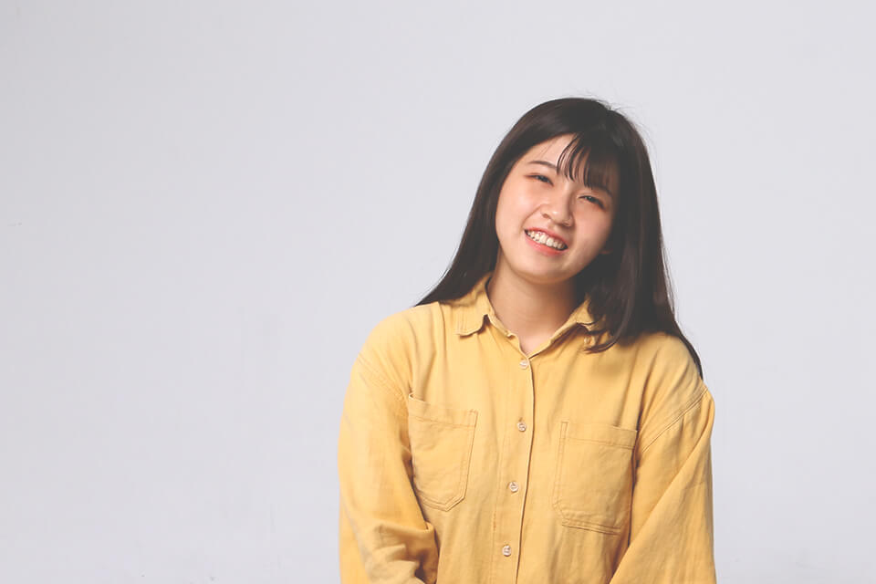

Hello.
我是芷妤，畢業於雲科大視覺傳達設計系，對生活的每一天都充滿期待。透過創作與世界溝通，傳達所想所做，正是我熱愛的。同時喜歡挑戰新事物，、創作上與各式各樣的人們合作解決困難、產生火花，用設計改變世界 : )
我是芷妤，畢業於雲科大視覺傳達設計系，對生活的每一天都充滿期待。透過創作與世界溝通，傳達所想所做，正是我熱愛的。同時喜歡挑戰新事物，、創作上與各式各樣的人們合作解決困難、產生火花，用設計改變世界 : )
針對各種風格與精神來建立品牌形象，將創意概念轉換為視覺效果，從草稿規劃、討論到完稿。
使用工具Adobe Photoshop、Adobe Illustrator、Sketch
從概念到應用，研究符合使用者習慣與操作，繪製功能流程圖、線框稿到原型。
使用工具 Axure、Sketch、Adobe XD、Figma
繪製圖像進行動態設計或使用影片素材進行調色剪輯完成影片。
使用工具Adobe After Effects、Adobe Premiere
操作相機進行產品、人像打光、佈局拍攝，進行後續影像處理。
使用工具Canon 70D、Adobe Photoshop